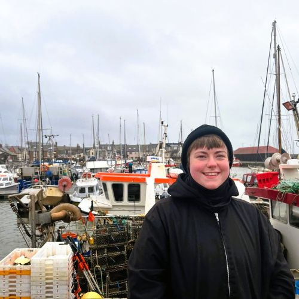

dr. michelle jamieson 🚀
I work at SCADR in the Health & Social Care theme. I received my PhD in Advancned Quantitative Methods from the University of Glasgow, where my work on quantitative reflexivity began.
Previously, I studied Research Methods and Public Health at UofG and Psychology at UWS.
I'm really interested in algorithmic fairness and measurement bias.